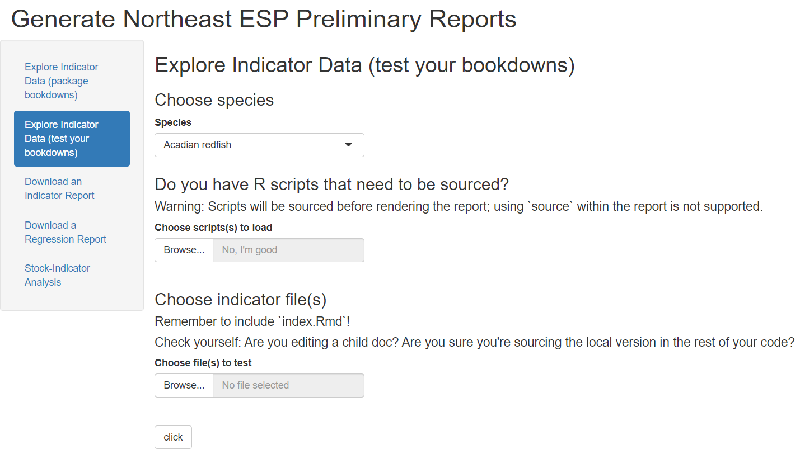
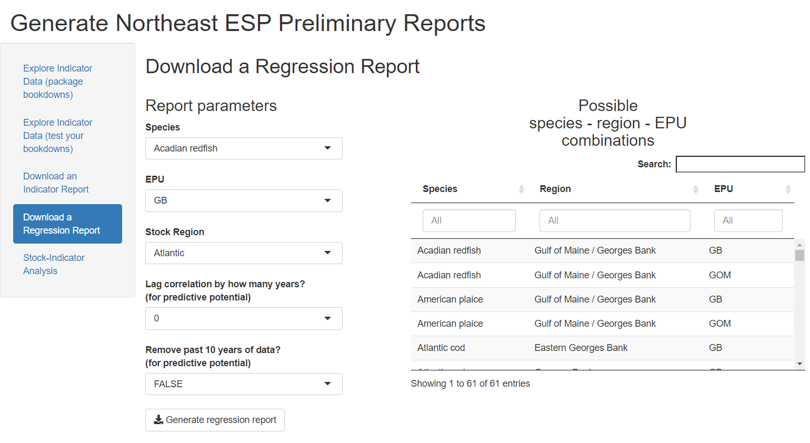

vignettes/NEespShiny.Rmd
NEespShiny.RmdNortheast Ecosystem and Socio-economic Profiles
App’s Name: NEespShiny
Developer(s): Abby Tyrell
Point of contact: Abby Tyrell, abigail.tyrell@noaa.gov (EDAB/contractor)
Keywords: ecosystem and socioeconomic profiles, IEA, EBFM/EBM
Key Packages: NEesp, bookdown, ggplot2, dplyr
GitHub: NOAA-EDAB/NEespShiny
Application Purpose
This shiny app is a graphical user interface for the NEesp package, which was developed to gather and display ecosystem and socioeconomic data for Northeast stocks. The NEEsp package assembles existing data, such as survey data, catch and landings, physical oceanography data, and trophic information, and integrates these data into reports using Rmarkdown templates. The Rmarkdown templates are rendered into reports with bookdown, so each report section can be saved as its own .Rmd file.
The NEespShiny app allows users to create reports without needing to directly work with the NEesp code.
There are five functionalities in the shiny app:
1. Render a single file from the package templates
The user can select any of the .Rmd files that are saved in the package indicator template, and the report page for the species selected will be displayed.

2. Render one or more files from local templates
The user can upload one or more .Rmd files and optional R scripts to test rendering of files in development. This functionality is primarily for developers.

3. Download an indicator report
The user can download a complete indicator report for any species. The report folder includes a Word report, raw data, and figures.

4. Download a regression report
The user can download a complete regression report for any species. The report folder includes a Word report, raw data, and figures.

5. Download an ESP report card
Using the data outputted from the regression report tab above, the user can create a report card for a stock. 
The NEespShiny app is currently disseminated as an R package. The package can be downloaded from GitHub, and the app can be initiated with one line of code: NEespShiny::run_NEesp(). This allows users to access and use the app without connecting to a VPN to access the NEFSC shiny1 server. Hopefully the NEespShiny app can eventually be hosted on a public-facing server.